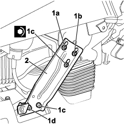

7040A90 REINFORCEMENT BRACKET ONE LEFT OR RIGHT BETWEEN FACIA SUPPORT BEAM AND BODY R R WITH FACIA REMOVED
- Path
- Procedures > 70 FITTINGS > 7040 BODY INTERIOR FITTINGS AND TRIM > 7040A PASSENGER COMPARTMENT TRIMS > 7040A90 REINFORCEMENT BRACKET ONE LEFT OR RIGHT BETWEEN FACIA SUPPORT BEAM AND BODY R R WITH FACIA REMOVED
- Kind
- repair procedure (removal / refitting; the operation number is the code)
- Applies to
- all engines; all production periods
- Interactive page
- https://sloeber94.github.io/elrnDB-fCrm/en/#/194001945
Applies to: all engines; all production periods
 Removing
Removing
 Refitting
Refitting1. Undo the fixing bolts (1a), (1b), (1c), (1d).
2. Remove the reinforcement bracket between the dashboard supporting crossmember and the bodyshell.

Applies to: all engines; all production periods
Refitting
Removing- Check that the reinforcement bracket is not damaged.
- Fit the reinforcement bracket and tighten the fixing bolts.
Component | Fastening | dia | Value (daNm) | Validity |
|---|---|---|---|---|
BRACKET FASTENING LEFT/RIGHT DASHBOARD TO CROSSMEMBER | Bolt | 0,8 ÷ 1,2 |
Topics that link to this page (11)
- 5040C10 AIR CONDITIONING CASING - R.R
- 5040C12 AIR CONDITIONING CASING - R.R. WITH DASHBOARD REMOVED
- 5040C50 AIR CONDITIONING HEATER RADIATOR - R.R.
- 5040C64 A/C EVAPORATOR - R+R
- 5040D80 AIR CONDITIONER SYSTEM WIRING BUNDLE - R R OR REPLACE
- 5040D94 AIR CONDITIONING LEFT UPPER AIR DISTRIBUTION FLAP MOTOR (DEFROST) - R.R
- 5505C10 FRONT CROSSMEMBER WIRING - R.R
- 5505C30 BUILT-IN WIRING UNDER DASHBOARD - R.R. WITH DASHBOARD TRIM REMOVED
- 5505C31 BUILT-IN WIRING UNDER DASHBOARD - R.R.
- 7040A95 REINFORCEMENT BRACKET ONE LH OR RH BETWEEN FACIA SUPPORT BEAM AND BODY R R
- 7040A97 INSTRUMENT PANEL TRIM SUPPORTING CROSSMEMBER - R.R